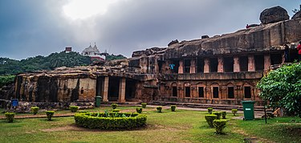

Udayagiri and Khandagiri Caves, formerly called Kattaka Caves or Cuttack caves, are partly natural and partly artificial caves of archaeological, historical and religious importance. The caves are situated on two adjacent hills, Udayagiri and Khandagiri mentioned as Kumari Parvata in the Hathigumpha inscription.
